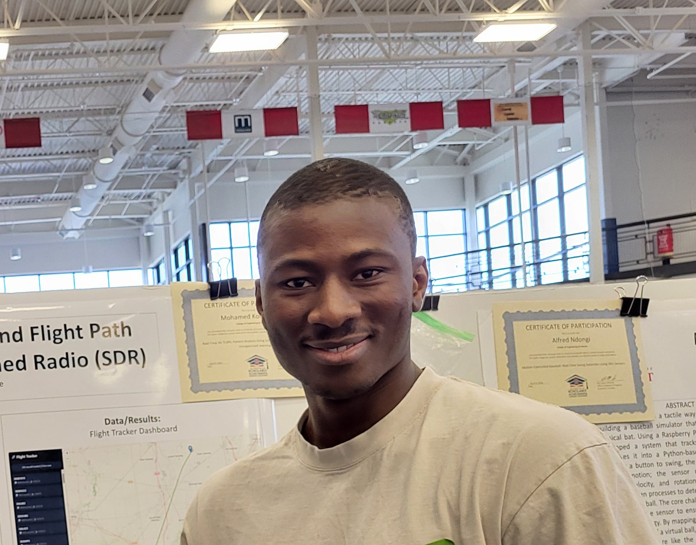

More Than a Resume
My name is Mohamed Kourouma. I was born and raised in Guinea, West Africa, and came to Michigan in pursuit of education and opportunity. I'm currently studying Computer Science at the University of Detroit Mercy, building on my pre-engineering transfer degree from Washtenaw Community College.
"My goal is to gain enough experience and knowledge to one day create products that will make people's lives better."
I initially started as self-taught — using platforms like FreeCodeCamp, Codecademy, and DataCamp to build a foundation before my formal coursework, and I continue to push beyond what the classroom alone can offer. I don't wait to be handed a problem; I find interesting ones and start building. That mindset led me to wire up an RTL-SDR radio receiver to track live aircraft overhead, and to implement an AI that plays Connect Four with alpha-beta pruning.
Before focusing on CS, I spent time in service-oriented work that shaped how I see technology — not as an end in itself, but as a tool to genuinely help people.
I also worked as a STEM tutor at WCC, which gave me one of the most undervalued skills in tech: breaking down complex ideas clearly and patiently for people who don't share your background yet. Every great engineer needs that.
One of my goals at UDM is to get involved in undergraduate research — particularly at the intersection of AI, real-time systems, and data engineering. My aircraft tracking project already lives in that space, and I'm actively looking for opportunities to take that kind of work further alongside faculty.
Beyond the Code
